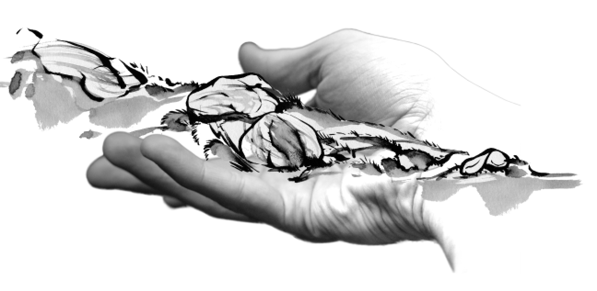
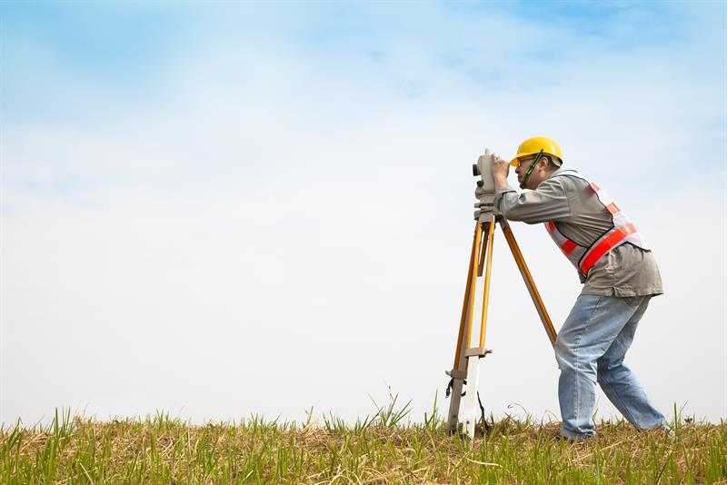
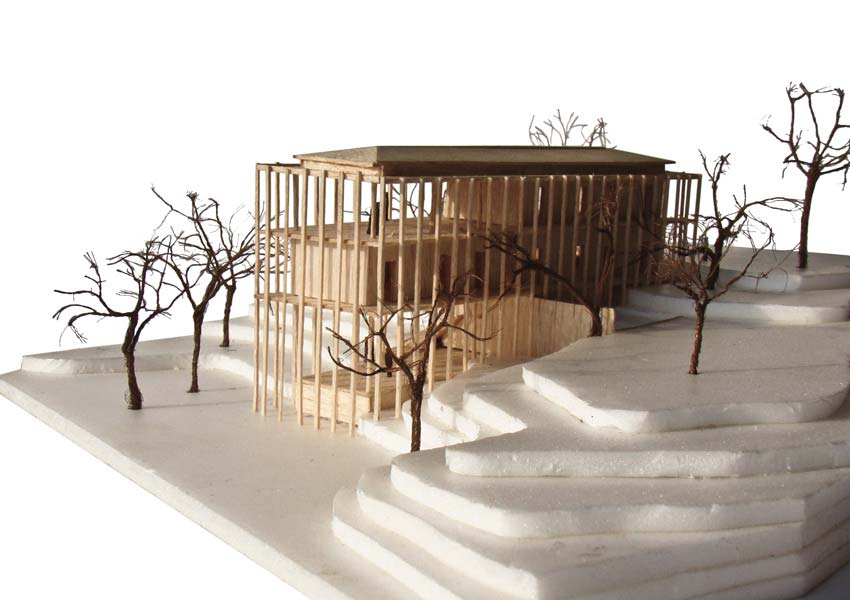
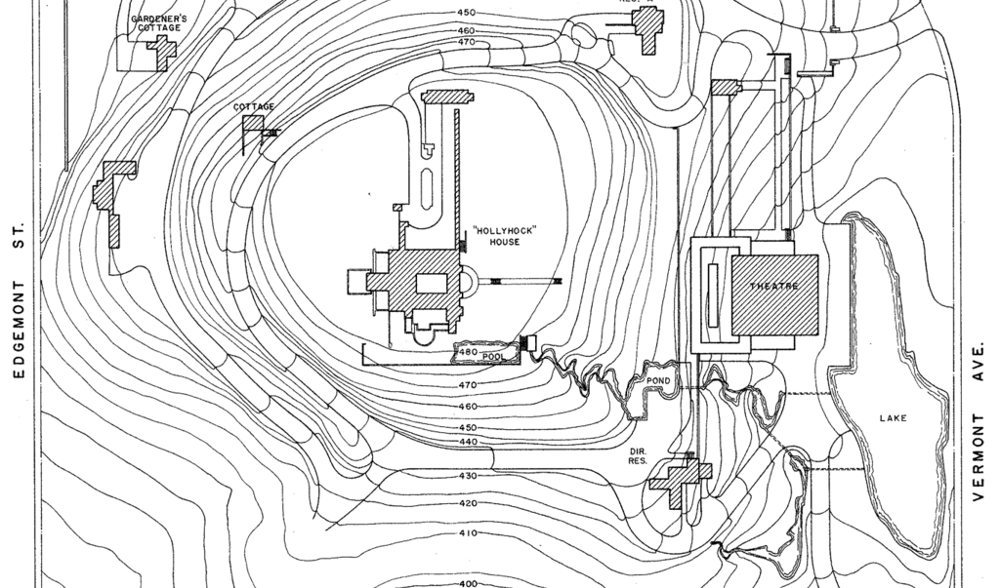

CHI 2018
Tangible Landscape:
A Hands-on Method for Teaching Terrain Analysis

Garrett C. Millar, Payam Tabrizian, Anna Petrasova, Vaclav Petras, Brendan Harmon, Helena Mitasova, Ross K. Meentemeyer

Presentation Outline
- Introduction
- Background
- Tangible Landscape
- Pilot Study
- Methods
- Results
- Discussion
- Limitations and Future Directions
- Conclusion
Background
Embodied Interaction
- Embodied cognition: providing the link between perception and action
- Tools for solving spatial problems can be cognitively grasped, understood, and simulated into one’s body schema
- Feeling, action, and thought are functionally integral to cognition
- Divide between natural thought processes and the virtual confinement of traditional computer interaction (2D)
Background
Graphical user interfaces (GUIs):
- Inflexible in use, and inadequate for users to perceive and process information
- Limit ways geospatial data can be represented

GRASS GIS Command Line Interface (CLI) & Graphical User Interface (GUI)
Background
Tangible user interfaces (TUIs):
- Bridge theoretical divide seen with GUIs
- Offer more natural and intuitive mode of interaction
- Allow users to cognitively grasp and physically manipulate 3D data
- Spport more effective and natural learning
GRASS Tangible User Interface (TUI) & Graphical User Interface (GUI)
Background
Tangibles in Education
- Spatially-focused curricula = improved student success
- Still difficult for students to visualize spatial relations
- Solution? Use tangibles in the classroom
Background
Typical Teaching Methods for Terrain Analysis:



| in-situ surveying | drawing contour maps | building physical models |
Tangible Landscape:
A tangible user interface powered by open source GIS
Tangible Landscape
Concept
With Tangible Landscape you can hold a GIS in your hands - feeling the shape of the earth, sculpting its topography, and directing the flow of water.
Tangible Landscape
Design
The Tangible Landscape system integrates four main computational components:
- (1) 3D scanning (of physical model)
- (2) point cloud processing
- (3) geospatial computation
- (4) projection
Tangible Landscape
Design
These components combine to create a continuous cycle of 3D scanning, geospatial modeling, and projection.

Tangible Landscape
Tangible Landscape as a Teaching Tool
By combining computerbased design and embodiment, Tangible Landscape has the potential to transform existing teaching methods within the hard sciences, social sciences, and mathematics.


Tangible Landscape
Interactions
Students can physically interact with digital models and simulations by:

| sculpting (hands) | sculpting (tools) | placing markers | establishing viewpoints | planting vegetation (patches) |